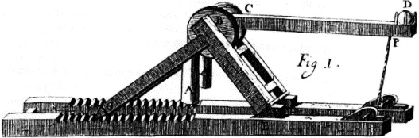
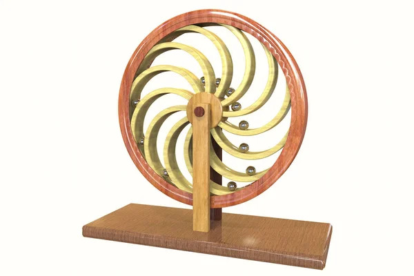
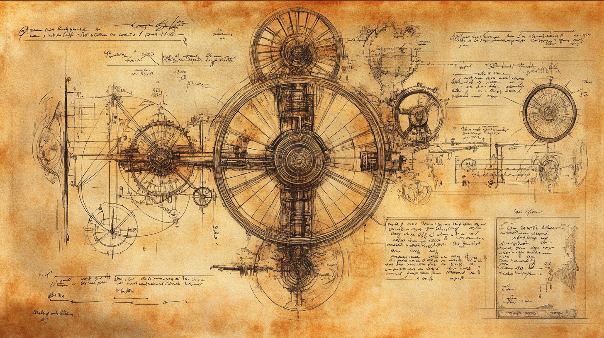

Project X
Leibniz, Perpetual Motion, and my Father
My father spent at least 40 years of his life working to develop an internally-driven perpetual motion machine. And I was a true believer, at least up until college.
My father held no stock in supposed refutations by mathematicians and physicists of the possibility of such a perpetual motion machine. He disagreed that such a machine would violate one or more of the laws of motion and thermodynamics, and firmly held that in the early 1700s Johann Bessler (better known under the pseudonym “Orffyreus”) had already invented such a machine. He thought that most people, including mathematicians and physicists, were of limited imagination and mechanical ingenuity, and too conservative when it came to challenging preconceived ideas. He argued that it was the combination of a deep-seated understanding of theory, with a distinct lack of experience in actually crafting things, that engendered the skepticism and conservatism of most mathematicians and physicists. My father would therefore be the one to reinvent it, based on historical clues gleaned from extant reports of Bessler’s machine and his own imagination and mechanical ingenuity. And there is no doubt that my father was extremely imaginative and mechanically ingenious. An electrician by trade with a workshop filled with tools, parts, and materials, he could seemingly build anything, and did build many things, from a highly efficient electric motor to uniquely amazing furniture.
My father called his work on perpetual motion, “Project X.” It was to be kept strictly a secret. Our immediate family knew about it, but no others. I do not even know whether any of my grandparents knew about it. It seemed that every month, my father would come up with a new iteration of Project X, or a new idea related to the project that he would soon implement. After I had grown up and left the house for good, every time I visited he would speak to me in hushed, important tones, “Marky, let’s go down to the shop. Let me show you my new Project X. I feel really good about this one.” This secrecy only lost its urgency in the last decade or so of his life. When buying parts from local industrial suppliers he would talk about his project, much to my mother’s chagrin.

There was one unforgettable experience growing up, around the age of 12, when I believed that my father had accomplished the “impossible.” He had brought a particular version of the machine up from his workshop to the house. Similar to many of the other versions, the apparatus was 27" to 30" in diameter, approximately the size of a bicycle wheel, with devices made up of rods, ball bearings, magnets, springs and other elastic elements, mounted to the circular apparatus. This time he let it go, with no push at all, and it rotated 360 degrees and more; it completed a full revolution from gravity alone. I can still see it in my mind’s eye. However, an integral moving piece of the wheel, either a rod, bearing, or magnet — who knows — did not align correctly on the second revolution, and so the wheel slowly stopped rotating. My father and I subscribed to the view that if a wheel rotates a complete revolution with no push, just gravity alone, other things being equal, it should rotate forever unless impeded by an external force. But things were not equal, and the wheel slowed agonizingly to a halt. We tried again and again to reenact this stupendous feat. I remember being even more disappointed than my father. I do not believe that my father ever got as close to perpetual motion as he did on that day, although he would probably disagree.
My father would always insist that what drove him to invent a perpetual motion machine was the good of humanity, and ultimately world peace, and that he would give away the successful design for free. I believed him, and still do. His thought was that when no one had to worry about energy — a mechanical internally-driven perpetual motion machine could be set up anywhere in a world and with a large enough diameter could provide endless energy to generate, for instance, heat and light — humans would have little need to exploit others. Imagine all those spinning wind towers you see while driving cross country, but this time without any wind. This thought is perhaps a bit naive — as is perhaps true for all visions of world peace too! — but nevertheless I find it beautiful. Project X, to me, came to represent the purest example of a well-intentioned and skilled individual who pursues with single-minded, bordering on the neurotic, obsession, and never-ending hopefulness, even cheerfulness, regarding a grandly consequential goal that has not even the slightest hope of ever succeeding. Though on rare occasions I still find myself holding out my father’s hope.
Where does Leibniz fit in? Let me explain. I went off to college to study engineering. Gradually, over the course of a couple of years, I moved into the more abstract field of philosophy, but was intrigued by philosophers who also worked on physical projects — philosophers who never left the concrete, literally. Think about it; there are not many of them, especially today. Anyway, Leibniz was just that sort of philosopher, having worked on calculating machines, cipher machines, mining operations, and learned what he could about gold making (alchemy), enameling, and clock-making, to name several. He even dabbled in sugar refining, water mills and pumps, brandy making, and salt production. It is not surprising then that Leibniz was also interested in perpetual motion.

The perpetuum mobile of Leibniz
Throughout history, multiple others, including Leonardo da Vinci and Isaac Newton, have engaged in their own variations of Project X, and Leibniz’s time (often referred to as the early modern period) was especially ripe with the controversy. Initially, Leibniz took the side of the optimists. Through his 20s, up until 1674 or so, Leibniz seemed confident that a perpetual motion machine could be constructed. In 1671, at the still relatively impressionable age of 25, Leibniz wrote a paper that included one of his own designs. Inspired by this paper, his friend and fellow perpetual motion enthusiast Johann Daniel Crafft signed an agreement with Leibniz to which they would report to the other about any information or progress related to their respective pursuits of perpetual motion and to keep their shared results secret. They understood the importance of the project for humanity, but also it was a business venture of sorts.
For the next few years, Leibniz worked on perpetual motion designs. It is unclear to what extent his designs were original, and it is equally uncertain whether he or the craftspeople he hired ever constructed any of them. His “tests” were mainly mathematical and a priori. Leibniz writes in relation to a machine that employed magnets: “I confess that this invention is most ingenious and magnificent but nevertheless I have eventually found that something is lacking in its foundation. I maintain that the middle magnet, which might seem to support perpetual motion, in fact destroys it by a malicious compensation.” He mentions friction as a contributing factor: “the necessity of the magnets to change place will considerably hinder the motion by continuously rubbing against the axes.” Undoubtedly, the process will come to an equilibrium and the machine will slow to a halt. Did he find the flaw using models or full-size versions of the machine? There is no clear indication that he did.
Your ad-blocker ate the form? Just click here to subscribe!
Other designs implemented elastic elements. He envisioned tubes, rotating on an axis, in which balls rolled and moved quickly by springs, which would drive the balls quickly from one end of the tube to the other in order to ensure that one side was always heavier than the other. So it is evident that at this point Leibniz endeavored to accomplish perpetual motion. Leibniz expressed his optimism in the following way: “The whole artifice of perpetual motion consists in finding the way of restoring the restoring force without using the force, which has to be restored. For that reason two forces have to be connected to each other in such a way that the restoring force acts separately whereby everything is compensated without affecting the machine. But this can happen in an admirable way.” (Interestingly, my father’s machines often incorporated both magnets and elastic elements such as springs, thus representing a kind of hybrid of Leibniz’s designs. However, I am fairly certain that my father never saw any of Leibniz’s designs, for he never spoke of them nor were they in his papers.)

One of many perpetuum mobile designs from the web.
But in Paris sometime in 1674 — after meeting Christian Huygens, who advised him to read John Wallis' Mechanica, Traité de la percussion ou choc des corps by Edme Mariotte, and other related works on mathematics, motion, and mechanism — Leibniz saw the error of his earlier optimism and twice definitively stated in his own reflections on motion that internally-driven perpetual motion machines were impossible. It was the new mechanics, including Torricelli’s Principle (in Torricelli’s words: “two connected heavy bodies cannot move of themselves unless their common center of gravity sinks”) plus his own discovery that, in a system of n number of colliding particles, the total mass x velocity2 remains constant throughout the interaction, that led Leibniz to his important discovery that a particular sort of physical efficacy — which he termed vis viva (“living force”) — is conserved in all mechanical processes. Leibniz closely connected his principle of the conservation of vis viva to the claim that perpetual motion is impossible.
By 1686, Leibniz’s rejection of perpetual motion was so entrenched in his physics and mechanics that it became a basic axiom. He even called it the principle of excluded perpetual motion: “In my view, in physics and mechanics it is the same to reduce ad perpetuum mobile as to reduce ad absurdum.” It played in physics the same role as a contradiction does in logic: both are absurdities. If any view or project depended on or was compatible with perpetual motion, that was enough for Leibniz to declare it false or futile. For instance, according to Leibniz, the fact alone that Descartes' own view of force allowed for mechanical processes that increased motive force, and thus could in theory be used to power perpetual motion, was sufficient to condemn Descartes' view to the dustbin. Leibniz similarly disposed of the possibility of Claude Perrault’s machine (a type of catapult) simply on the basis that it was a type of perpetual motion machine. Leibniz had become one of the greatest skeptics of perpetual motion. As he put it in Brevis Demonstratio:
“It is rational to say that the same sum of motive force is conserved in nature. This sum does not decrease, since we never observe any body lose any force that is not transferred to another. Nor does this sum increase since perpetual motion is unreal to such a degree that no machine and consequently not even the entire world can conserve its force without new external impulsion.”
So by the time Leibniz heard of Bessler’s machine, he was incredulous. This was in 1714, two years before Leibniz’s death. Gottfried Teuber, a court clerk and friend sometimes employed by Leibniz, contacted Leibniz with “some very important news.”
“A man called Orffyreus [Johann Bessler] has constructed an alleged perpetual motion machine in the nearby village of Draschwitz… This machine was shown to Mr. Buchta and me. It is a hollow wheel of wood, 10 feet in diameter, and six inches think. It is covered by thin wooden planks in order to hide the internal mechanism. The axle is also wooden, and extends one foot beyond the wheel. … Having made an appointment with the inventor, we approached the machine and noticed that it was secured by a cord to the rim of the wheel. Upon the cord being released, the machine began to rotate with great force and noise, maintaining its speed without increasing or decreasing it for some considerable time. To stop the wheel and retie the cords required tremendous effort. The inventor is asking for 100,000 Thalers [a fortune in silver coin!] to reveal the mechanism or sell the machine.”
To which Leibniz replied: “I cannot believe that someone has invented perpetual motion. For in my opinion it is contrary to the laws of nature. I suspect that what you witnessed in the action of the wheel was the result of highly compressed air. However, it would need to be compressed again after a short time.” Leibniz had already designed such a machine that stored energy, but while he considered such machines very useful, he never considered such machines perpetual. He called them instead “perpetuated” machines.

Image: Midjourney.
David Pye distinguishes “craftsmanship of certainty” from the “craftsmanship of risk.” My father often engaged in the former, crafting furniture that he knew would succeed, but what gave him true joy was the latter, crafting things that held no promise of success, especially as exemplified in Project X. He was willing to proceed for nothing, with so little to gain that it could turn off the most patient person in the world. But my father was not turned off; he did not give up even in his final days. With arthritis and poor eyesight, coming home from hospital after a series of strokes and brain surgery, my mother set up a tent on the patio outside his shop so that he could continue working. He was physically incapable, but never gave up.
Similar to my father, Leibniz distrusted inventors who proceeded principally in theoretical terms. While Leibniz did not craft things himself, he well understood that craftspeople are not constrained by pre-conceived views or theories on what is possible. So not only did Leibniz hire craftspeople to do the mechanical work for him, but also to help him hone designs and therefore function as co-inventors. Craftspeople and hands-on inventors, such as my father, often proceed under the guiding principle not found in the template of the theoretician inventor — if I can imagine it, I can make it — and test different designs until such futility becomes obvious. Yet, as my father insisted to me, Leibniz eventually turned into the very kind of inventor Leibniz himself distrusted. For Leibniz gave up on perpetual motion because of theory.
When it comes to problem-solving, I am indebted to both my father and Leibniz. They demonstrated remarkable patience and ingenuity, and both understood that physical construction is sometimes the only way to really know whether a problem can be answered. My father’s optimism when it came to problem-solving can be called irrational, but equally it can be called youthful. The young Leibniz certainly believed in perpetual motion. I learned from both never to take the word of anyone for granted regarding what is or is not possible, no matter how learned or accomplished they happen to be. This approach has generally served me well in philosophy, but I must be careful not to take this attitude too far. But how far is too far?
◊ ◊ ◊

Marc Bobro is Professor of Philosophy and Honors Program Director at Santa Barbara City College and regularly teaches Modern Philosophy, Ancient Philosophy, Introduction to Ethics, Philosophy of Art, and Logic. He is a graduate of Univ. of Arizona (BA), King’s College London (MA), and Univ. of Washington (PhD).
Bobro publishes mainly in early modern philosophy, especially on Leibniz, with a book and numerous articles. He also runs the Department of Electrophilosophy, a collaborative project that publishes a philosophy podcast as well as experimental music.
See also: https://soundcloud.com/electrophilosophy
Marc Bobro on Daily Philosophy:
Bibliography
Antognazza, Maria. Leibniz: An Intellectual Biography. (Cambridge, 2009).
Collins, John. Perpetual Motion: An Ancient Mystery Solved? (Permo, 2005).
Freudenthal, Gideon. “Perpetuum mobile: the Leibniz-Papin controversy.” Studies in the History and Philosophy of Science 33 (2002) 573-637.
Jones, Matthew L. Reckoning with Matter: Calculating Machines, Innovation, and Thinking about Thinking from Pascal to Babbage. (Chicago, 2016).
Kirsanov, Vladimir. “The Global and the Local: The History of Science and the Cultural Integration of Europe.” Proceedings of the 2nd ICESHS (Cracow, Poland, 2006).
Leibniz, Gottfried Wilhelm. Leibnizens mathematische Schriften. C. I. Gerhardt, Ed. (Hildesheim: Olms, 1971; first published 1850–1863).
Leibniz, Gottfried Wilhelm. Epistolae XLVI ad Teuberum concionartorem aulae cizensis.
Leibniz, Gottfried Wilhelm, et al. Sämtliche Schriften Und Briefe. 8. Reihe 2. Band, Naturwissenschaftliche, Medizinische Und Technische Schriften 1668-1676 (Reichl, 2016).
Leibniz, Gottfried Wilhelm. Leibnizens nachgelassene Schriften physikalischen, mechanischen und technischen Inhalts, hrsg. und mit erläuternden Anmerkungen. Gerland, Ernst, Ed. (B.G. Teubner: Leipzig, 1906).
Pisano, Raffaele and Paolo Bussotti. “Historical and Epistemological Reflections on the Culture of Machines around the Renaissance: Machines, Machineries and Perpetual Motion.” Acta Baltica Historiae et Philosophiae Scientiarum 3/1 (Spring 2015): 69-87.
Pye, David. The Nature and Art of Workmanship. (Cambridge, 1968).
Stan, Marius. “Leibniz, perpetuum mobiles, and the eternity of the world.” In Yitzhak Melamed, Eternity: A History. (Oxford, 2016).